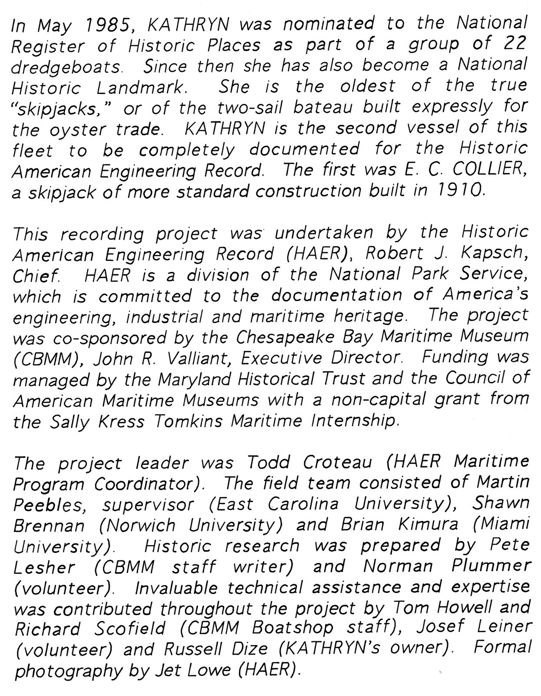

Original scan pixels: [10379, 3261, 13502, 7274]; source SHA-256: 2331daad060a890dcaf424a5c3148d069958564fa24096fce737f284e43e9b7f.
Native lossless view · Raw OCR · Word coordinates/confidence · Manifest

In May 1985, KATHRYN was nominated to the National Register of Historic Places as part of a group of 22 dredgeboats. Since then she has also become a National Historic Landmark. She is the oldest of the true “skipjacks,” or of the two-sail bateau built expressly for the oyster trade. KATHRYN is the second vessel of this fleet to be completely documented for the Historic American Engineering Record. The first was E. C. COLLIER, a skipjack of more standard construction built in 1910. This recording project was undertaken by the Historic American Engineering Record (HAER), Robert J. Kapsch, Chief. HAER is a division of the National Park Service, which is committed to the documentation of America’s engineering, industrial and maritime heritage. The project was co-sponsored by the Chesapeake Bay Maritime Museum (CBMM), John R. Valliant, Executive Director. Funding was managed by the Maryland Historical Trust and the Council of American Maritime Museums with a non-capital grant from the Sally Kress Tomkins Maritime Internship. The project leader was Todd Croteau (HAER Maritime Program Coordinator). The field team consisted of Martin Peebles, supervisor (East Carolina University), Shawn Brennan (Norwich University) and Brian Kimura (Miami University). Historic research was prepared by Pete Lesher (CBMM_ staff writer) and Norman Plummer (volunteer). Invaluable technical assistance and expertise was contributed throughout the project by Tom Howell and Richard Scofield (CBMM Boatshop staff), Josef Leiner (volunteer) and Russell Dize (KATHRYN’s owner). Formal photography by Jet Lowe (HAER).